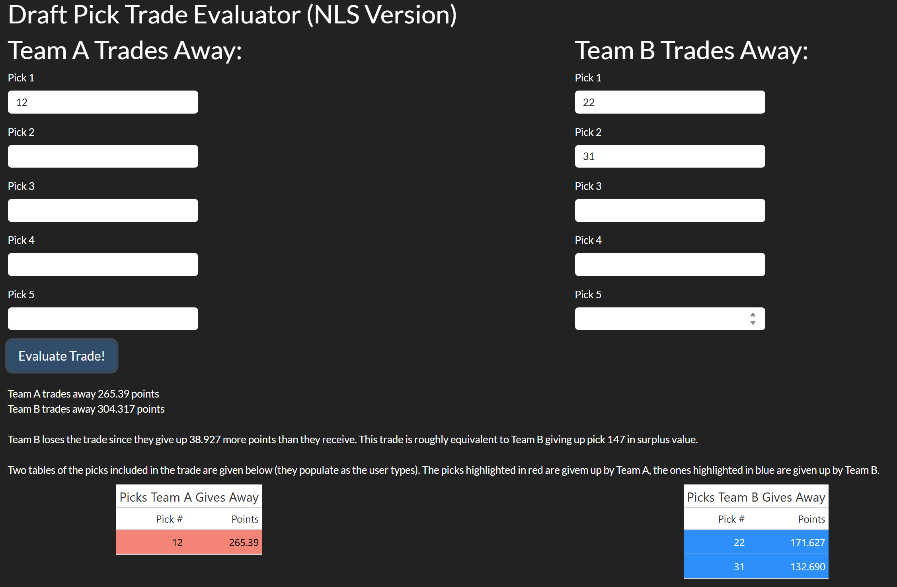
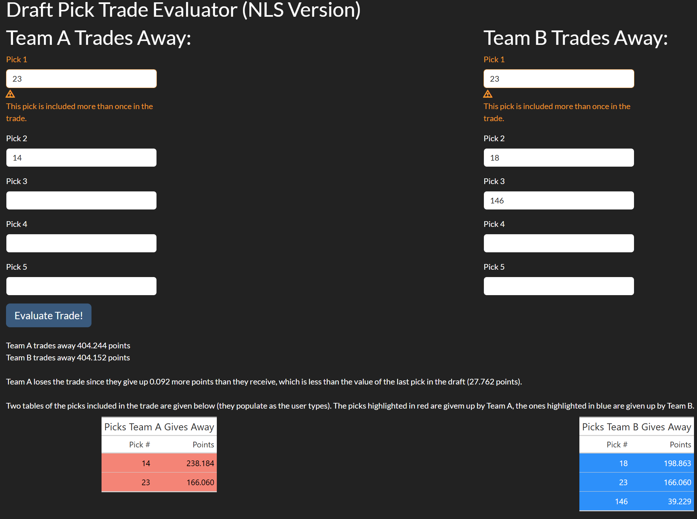
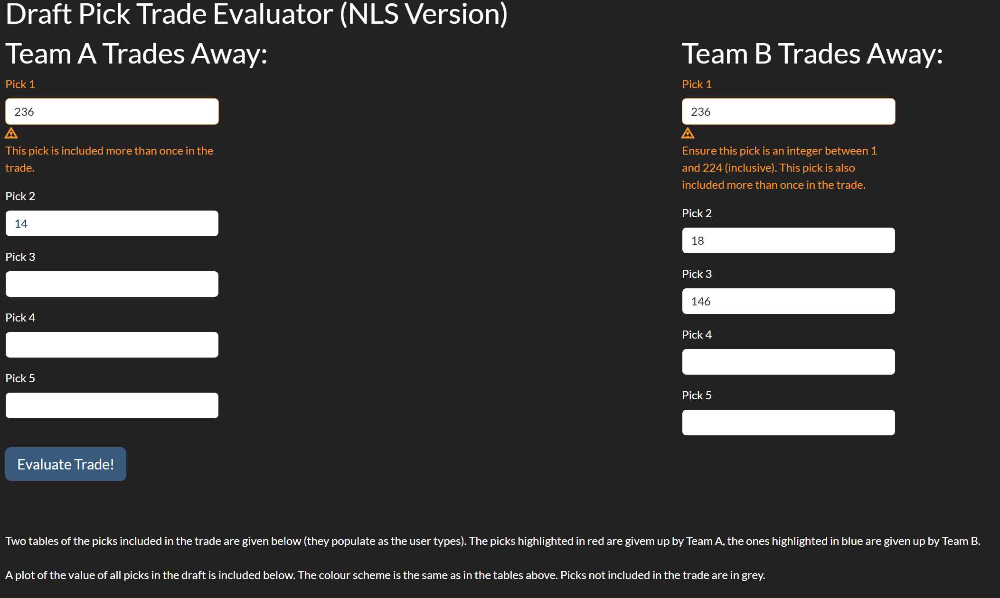
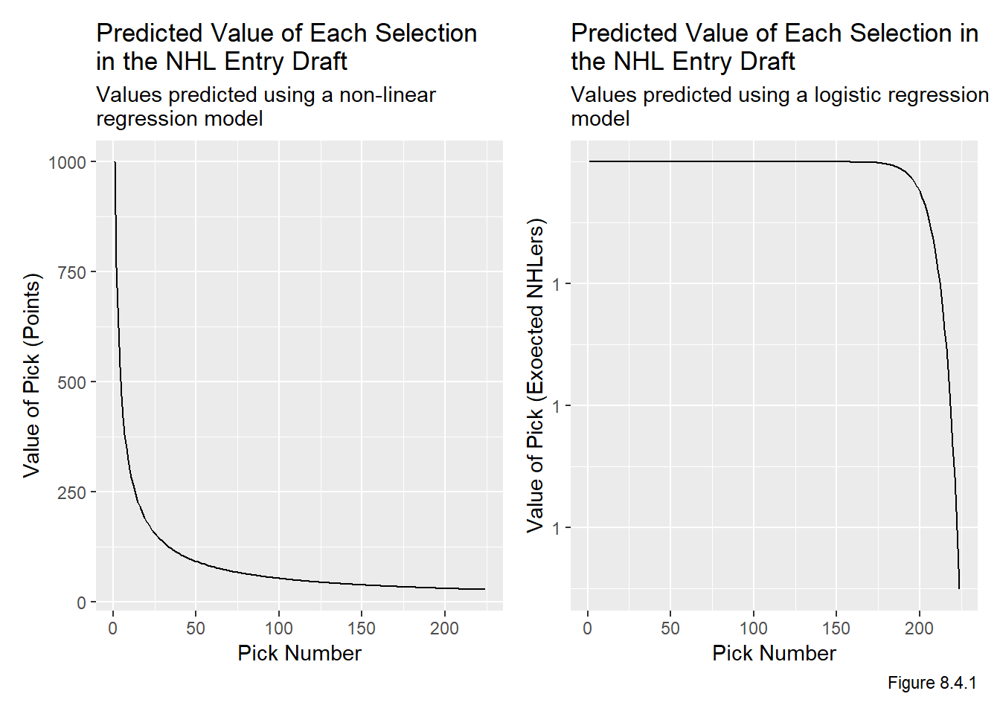

Code
# renv::install(patchwork)
# renv::install(reactable)
library(patchwork)
library(reactable)
source("functions.R") # load functions defined in prior chaptersWe install and load the necessary packages, along with functions from prior chapters.
# renv::install(patchwork)
# renv::install(reactable)
library(patchwork)
library(reactable)
source("functions.R") # load functions defined in prior chaptersAs mentioned in the Model chapter, there are two shiny apps associated with this project. The first, linked here, uses non-linear regression to make predictions based on the PS of future picks. If I was advising a team, this is the model I would suggest using. The second app is no longer functional because I don’t want to pay for AWS, but used logistic regression to make predictions based on the expected value of each pick, which is the probability of the player selected at that pick becoming an NHL regular. Disclaimer: adding probabilities in this manner is dubious at best from a statistical perspective, but vetiver does not easily support nls objects as mentioned in the Model chapter, so I needed to use a model from lm or glm, in order to satisfy many of the the devops requirements for this app. Using expected NHLers as the interpretation of pick value allows us to add values together, but the predictions are just not very good (it values pick 1 as pick 50 + pick 100, if any NHL GM traded the first overall pick for these two picks they would be fired on the spot). I have also chosen not to scale the predicted values from the logistic model; the interpretation of expected NHLers is very convenient and easy to understand so I don’t want to lose that.
The apps differ only in the models they are based on (and a little bit in their underlying code). Their UIs are almost identical (except for some aesthetic differences), so the instructions for both apps are exactly the same, though the included screenshots are only for the app based on the model fit via non-linear regression.
Usage of the app is very straightforward. Users can enter the picks into boxes under the appropriate team. The app responds by adding the picks to the below tables as the user types, allowing the user to visually estimate the trade before evaluating. A screenshot of part of the UI before “Evaluate Trade” is clicked is shown in Figure 8.3.1:
There is also a plot at the bottom of all picks in the draft so users can roughly estimate the value of all picks without needing a massive table. This plot also colours points as the user types, as shown in Figure 8.3.2:
When the user clicks “Evaluate Trade!” there are three messages that come up. The first two tell the user how many points each team is trading away. Though sort of trivial in this example (since Team A only trades one pick) this can be quite useful in trades where more than a few picks are being exchanged. The last message is a summary which says who loses the trade, how many points they lose it by, and what pick this is equivalent to. The equivalent pick is (usually, more on this shortly) the pick which is closest to the point difference is important because it gives the user context on how big the difference is, which is difficult to do using points since they are unitless. This is shown in Figure 8.3.3 below:

There are a number of possible messages that can come up depending on the trade’s point difference, to give the user more context on the trade. Some of the possible messages are given in Figures 8.3.4 and 8.3.5 below:
The app also has a message for if the difference is < 0.001 points, but it turns out to be quite difficult to find a trade which is this close. The app also protects the user from doing things that don’t make sense. For example, clearly the only values that should be used are positive integers (for example pick -1 and pick 17.4 don’t make sense). Additionally, the last pick in the draft is pick 224, so any positive integer greater than 224 should be banned too. If there are invalid inputs, the user will be visually warned, and the app will refuse to evaluate the value of picks for the affected team(s) and any comparisons. In the app based on the logistic model, this is considered an ERROR for logging purposes. Furthermore, the tables and plots will also not render until all picks are valid. Note the app will still calculate the total points for one team if all of their picks are valid. We see examples of this in Figures 8.3.6 and 8.3.7:
Another possible situation is if picks are duplicated (either one team trades the same pick twice or both teams give up the pick). In this case, there is nothing technically wrong with the trade, so the user will be visually warned but the text, tables, and plots will render. In the logistic model, this is considered a WARN for logging purposes. An example of this is given in Figure 8.3.8:

if there are duplicated picks which are also invalid, the user will be warned for both and nothing will render for either team. This is logged as an ERROR in the logistic model. This is shown in Figure 8.3.9:

3 team trades are incredibly rare in the NHL so they are not directly included in the app, though they could be analyzed by looking at what each team individually receives and gives up (ie look at it in terms of 3 two team trades).
We also present two other summaries of the results. First, we have a plot of the value of each pick given in Figure 8.4.1, note that a geom_point() version of these exact plots are used in the shiny apps.
ggplot(pred_vals_nls, aes(x = overall, y = as.numeric(pts))) +
geom_line() +
labs(x = "Pick Number", y = "Value of Pick (Points)",
title = "Predicted Value of Each Selection\nin the NHL Entry Draft",
subtitle = "Values predicted using a non-linear \nregression model") +
ggplot(pred_vals_logist, aes(x = overall, y = 1/(1+exp(-as.numeric(pts))))) +
geom_line() +
labs(x = "Pick Number", y = "Value of Pick (Exoected NHLers)",
title = "Predicted Value of Each Selection in \nthe NHL Entry Draft",
subtitle = "Values predicted using a logistic regression \nmodel",
caption = "Figure 8.4.1")
We also provide a table of all predicted pick values based on the models, which are given in Table 8.4.2.
reactable(data.frame(cbind(pred_vals_nls,
1/(1+exp(-pred_vals_logist[2])))),
columns = list(
overall = colDef(name = "Overall"),
pts = colDef(name = "Points"),
pts.1 = colDef(name = "Probability of Becoming Regular NHLer")))Table 8.4.2: Table of Predicted Values